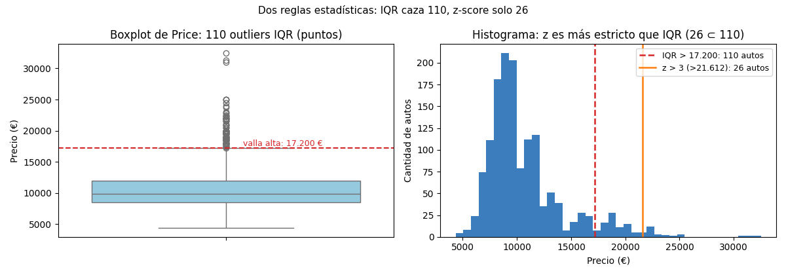

Unidad 2 · Exploración de datos · Lección 0007
Outliers estadísticos: IQR y z-score
Win de hoy: cazar outliers de Price con dos reglas clásicas
(IQR caza 110,
z-score solo 26) y entender
por qué ninguna ve los KM ≤ 100 de la 0004.
1 · Outlier: el que se desvía (¿error o rareza real?)
Un outlier
es un valor que se desvía tanto del resto que parece venir de otro mecanismo. La distinción que importa, ya vista
en la 0004: cc = 16000 es casi seguro un error (un cero de más), mientras que
Doors = 2 puede ser una rareza real. La estadística detecta; el analista decide.
Hoy, dos detectores de una sola columna (univariados).
2 · Regla IQR: las vallas del boxplot (110 en Price)
El rango intercuartílico (IQR = Q3 − Q1) mide el ancho de la mitad central.
La regla clásica del boxplot: outlier es lo que cae fuera de Q1 − 1,5·IQR y Q3 + 1,5·IQR
(las “vallas”). Para Price: Q1 = 8.450, Q3 = 11.950, IQR = 3.500 → vallas 3.200 y 17.200:
q1, q3 = df["Price"].quantile(0.25), df["Price"].quantile(0.75)
iqr = q3 - q1
lo, hi = q1 - 1.5*iqr, q3 + 1.5*iqr # 3200 – 17200
out_iqr = (df["Price"] < lo) | (df["Price"] > hi)
print(out_iqr.sum()) # 110 (el más barato: 17.250 €)KM la valla baja da −23.031
(¡kilometraje negativo!). Como ningún auto tiene KM negativo, el IQR es ciego por abajo: los 9
KM ≤ 100 de la 0004 no saltan. La regla supone distribución pareja; KM
no la tiene. Ningún detector ve todo.3 · z-score: distancia en desvíos (|z| > 3 caza 26)
El z-score mide a cuántos
desvíos estándar está cada valor
de la media:
z = (x − media) / desvío. La regla habitual: |z| > 3 es outlier. Para
Price (media 10.731, desvío 3.626) eso es pasar los 21.612 €:
z = (df["Price"] - df["Price"].mean()) / df["Price"].std()
out_z = z.abs() > 3
print(out_z.sum()) # 26, todos dentro de los 110 del IQRz es más estricto (26 ⊂ 110) porque supone forma de campana más o menos simétrica, y
Price tiene cola a la derecha (sesgo, 0006). Moraleja: cada regla trae supuestos; con sesgo, el IQR
(basado en cuartiles, robustos) suele cazar mejor.
4 · Qué hacer: flag, comparar y no borrar
Detectar no es eliminar. Protocolo honesto: flag 0/1, y reportar el resultado con y sin outliers:
df["out_iqr"] = out_iqr.astype(int)
print(df["Price"].mean()) # 10731 (con los 110)
print(df.loc[~out_iqr, "Price"].mean()) # 9945 (sin ellos: −786 €)Los 110 caros inflan la media en 786 €: decirlo es parte del análisis. Y queda una deuda: estas reglas miran
una columna a la vez. Un auto puede ser normal en KM, normal en Price…
y rarísimo en combinación (joven pero baratísimo). Eso lo cazan los detectores multivariados de la 0008.
5 · Figura: las dos reglas sobre Price

Regenerar la figura (mismo resultado versionado en assets/img/toyota/):
python scripts/make_figures.py --only outliers-estadisticos-iqr-z6 · Quiz (auto-chequeo inmediato)
7 · Fuente primaria y cierre
Para profundizar (1 fuente): Tan, Steinbach & Kumar, Introduction to Data Mining — capítulo de detección de anomalías (enfoques estadísticos, por proximidad y por clustering) (dmbook, también en RESOURCES.md del curso).
¿Algo no quedó claro? Preguntame al agente: por qué 1,5·IQR, cuándo z miente con sesgo, o cómo decidir entre corregir, marcar o excluir. Esa pregunta vale más que releer.